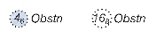
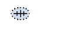
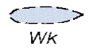
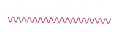
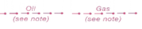
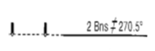

| 161. Знакът нанесен на морска карта означава: |
|
останки от потънал кораб, чиято мачта се показва над водата изкуствен навигационен ориентир потънал под водата кораб мачта, на която има поставена УКВ антена |
| 162. Знакът нанесен на морска карта означава: |
|
УКВ радио антена изкуствен навигационен ориентир останки от потънал кораб, които не са опасни за корабоплаване под повърхността потънал кораб, чийто корпус се вижда над водата |
| 163. Знакът нанесен на морска карта означава:  |
|
препятствие с най-малка дълбочина над него, както е указана отделна изолирана дълбочина отделна плитковина с приблизително измерена дълбочина препятствие за корабоплаването с посочена височина над водата |
| 164. Знакът нанесен на морска карта означава:  |
|
опасни останки от потънал кораб, дълбочината е неизвестна УКВ радио антена с приблизително нанесено място отделна плитковина с приблизително нанесено място потънал кораб, чийто корпус се вижда над водата |
| 165. Знакът нанесен на морска карта означава:  |
|
останки от потънал кораб, дълбочината е неизвестна останки от потънал кораб, които не са опасни за корабоплаване по повърхността потънал кораб, чийто корпус се вижда над водата потънал под водата кораб |
| 166. Знакът нанесен на морска карта означава: |
|
буй за изолирана опасност платформа с дадено наименование/обозначение фар светещ с червена светлина буй за безопасни води |
| 167. Знакът нанесен на морска карта означава: |
|
задължително кръгово движение около платформата район забранен за риболов зона за безопасност около отдалечено от брега съоръжение швартови буй |
| 168. Знакът нанесен на морска карта означава:  |
|
препоръчителен фарватер траектория на променливо морско течение фарватер, на който е разрешено заставането на котва подводен кабел |
| 169. Знакът нанесен на морска карта означава:  |
|
линия обозначаваща подводен кабел фарватер, на който е разрешено заставането на котва подводен тръбопровод за нефт / газ подводни кладенци за добив на нефт / газ |
| 170. Знакът нанесен на морска карта означава:  |
|
водещи/створни знаци посоката на положен подводен тръбопровод посоката на положен подводен кабел направление по което трябва да се избягва движението |